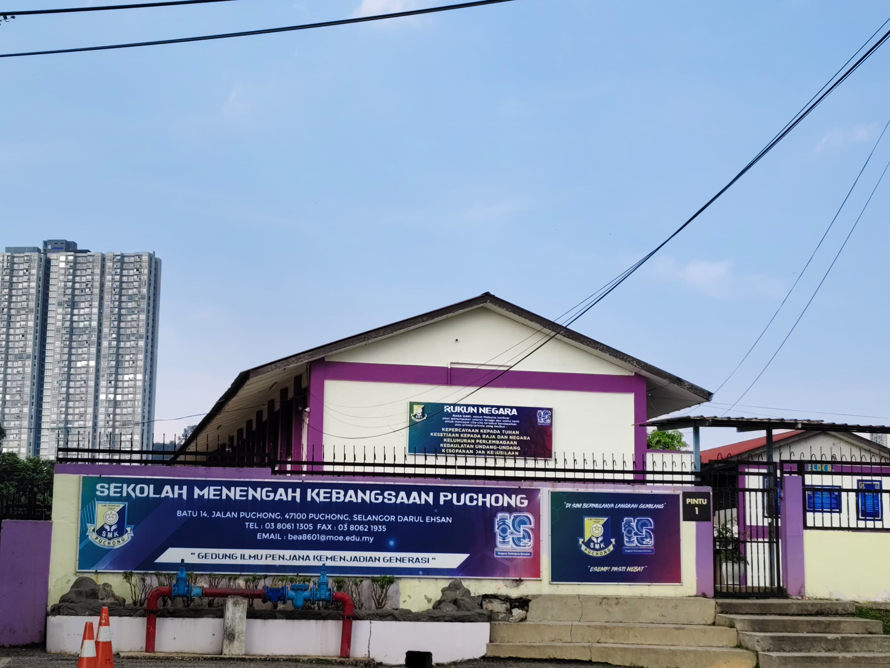

Education Timeline
Below is a summary of my educational journey, from primary school to university.
| Level | School/Institution | Years | Logo | Description |
|---|---|---|---|---|
| Primary School | SK Example Primary School | 2012 - 2017 | This is where my formal education began. I learned basic subjects and developed a love for reading and learning. | |
| Secondary School | SMK Example Secondary School | 2018 - 2022 |  | I built deeper knowledge in science, mathematics, and language. I also joined co-curricular activities and developed leadership skills. |
| University | Universiti Teknologi MARA (UiTM) | 2023 - Present |  |
Currently pursuing my studies at UiTM Sungai Petani in the field of Diploma in Library Informatics. This is where I’m growing both personally and professionally. |